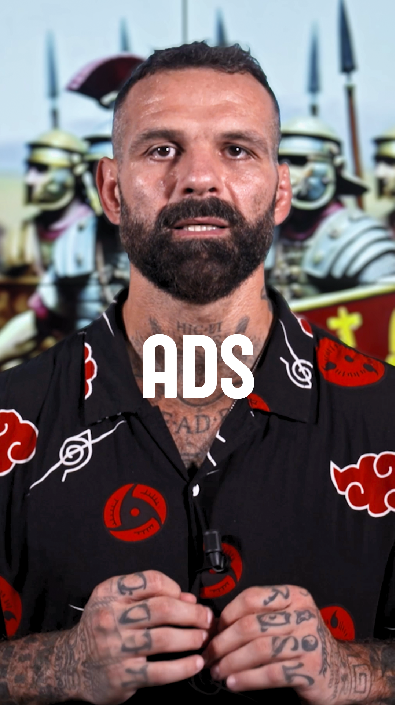
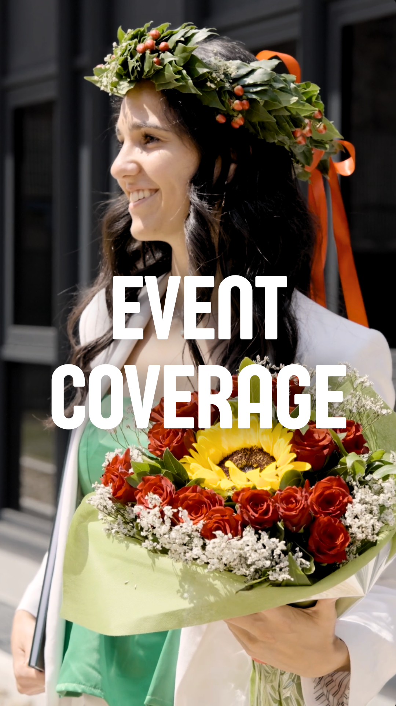
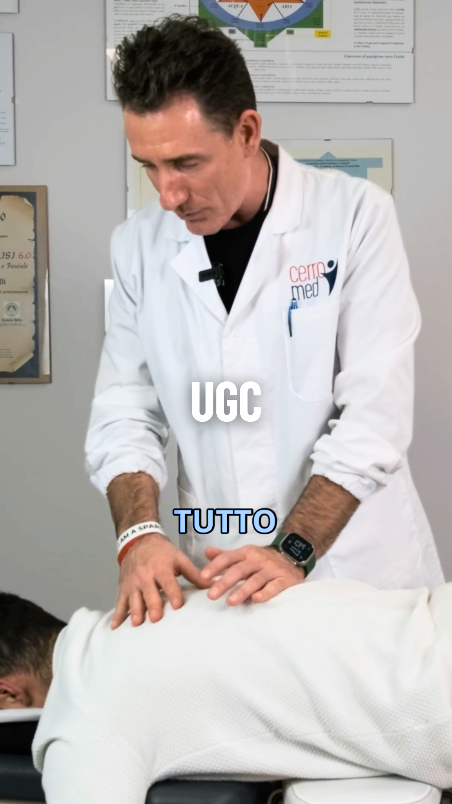

Vertical




Attraverso un ritmo narrativo studiato e una selezione mirata delle sequenze, l'editing enfatizza i concetti di sicurezza e prontezza operativa, traducendo visivamente l'impegno di AXON nell'ambito della difesa

Video reportage dell'esclusivo evento "La Volpe Argentata", che unisce la passione per le auto d'epoca alla competizione golfistica in una cornice di prestigio
Realizzazione di video animati per aziende no profit come Save The Children e LD4D. Ho curato il movimento e il sound design dei video
Sigla d'apertura dello storico format sul Teramo Calcio. Il montaggio unisce un linguaggio moderno alla sigla storica degli anni '90, utilizzando i colori biancorossi come elemento grafico distintivo per celebrare l'identità e la tradizione del club
Un visual essenziale costruito attorno a un'idea sinestetica: evocare l'aroma del caffè attraverso la resa visiva del calore. Ho curato ripresa e color grading per dare corpo e texture al vapore, trasformandolo nel protagonista visivo che accompagna la tazzina
Montaggio di un videoclip musicale del gruppo Fidanza Jazz Combo girato in studio come visual della canzone a Birimbo Birambo
Cortometraggio realizzato per il 48 Hour Film Project, incentrato su una storia di tensione emotiva e scoperta. Il montaggio ha avuto un ruolo chiave nel definire il ritmo narrativo, valorizzando la performance degli attori e garantendo coerenza stilistica in tempi di produzione estremamente ridotti.
Cortometraggio distopico realizzato per il 48 Hour Film Project, ambientato in una realtà dove il meteo non è più naturale, ma un prodotto acquistabile tramite abbonamenti. Il montaggio definisce il tono straniante di questo futuro mercificato, garantendo ritmo e coerenza narrativa nonostante i tempi strettissimi. Ho curato personalmente i VFX della scena finale, creando l'elemento visivo chiave che chiude il corto svelando l'artificialità dell'atmosfera.
Lungometraggio drammatico che affronta temi delicati come la violenza domestica, la ludopatia e la rinascita personale. Ho curato il montaggio del film, lavorando sulla costruzione emotiva della narrazione e sul ritmo delle interpretazioni, essenziali per restituire la complessità dei legami tra i protagonisti. Inoltre, ho realizzato il trailer ufficiale, sintetizzando l'intensità della storia in un taglio promozionale d'impatto, pensato per coinvolgere il pubblico senza svelare i nodi cruciali della trama.
Video concept realizzato anche in stop motion, incentrato sulla stratificazione della lasagna. Ho curato dalla ripresa al montaggio, costruendo una narrazione visiva che esalta il processo di assemblaggio del piatto strato dopo strato. Il lavoro di color grading valorizza i contrasti cromatici tra ragù, besciamella e pasta, mentre il sound design accompagna il ritmo ipnotico dell'animazione, trasformando una ricetta tradizionale in un'esperienza estetica e sensoriale.
Video realizzato nell'ambito della creazione di contenuti social per Videomnia Produzioni. Ho realizzato il movimento delle camere in stop motion ed il montaggio della clip per creare un contenuto che ricreasse l'ambiente lavorativo dello studio di produzione
Curatrice tecnica per una serie di episodi del podcast di Fondazione Vertical, un progetto dedicato a temi di impatto sociale e innovazione. Ho gestito l'intera produzione video, definendo lo stile di regia multicamera e occupandomi del montaggio di ogni puntata.
Intervista dedicata a Nino Celeste, storico direttore della fotografia del cinema italiano. Il montaggio è strutturato per accompagnare il racconto della sua carriera, alternando i momenti di dialogo con materiale d'archivio e riferimenti visivi alle sue opere
Save The Children
LD4D
Axon
Lisciani Giochi
Fondazione Vertical
Fisioaccordo